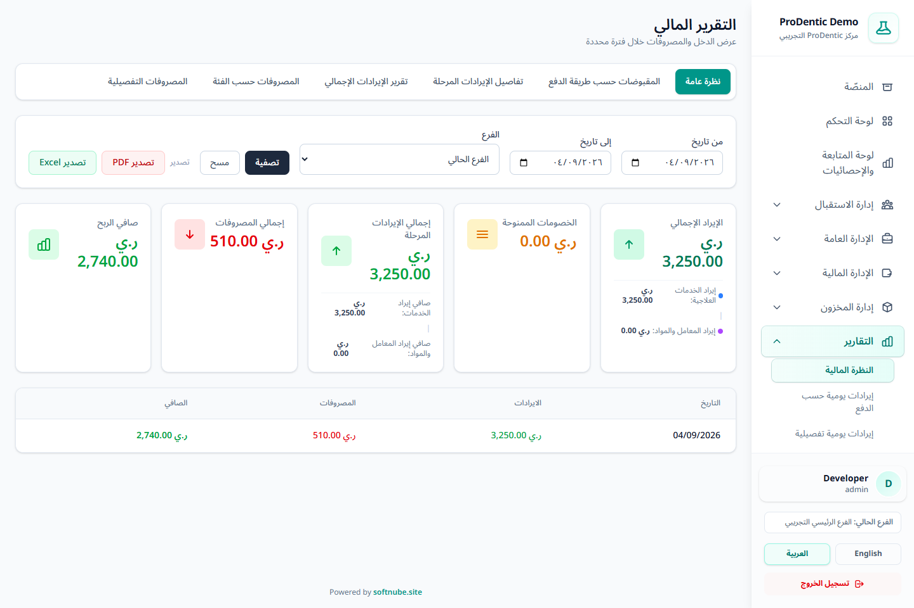
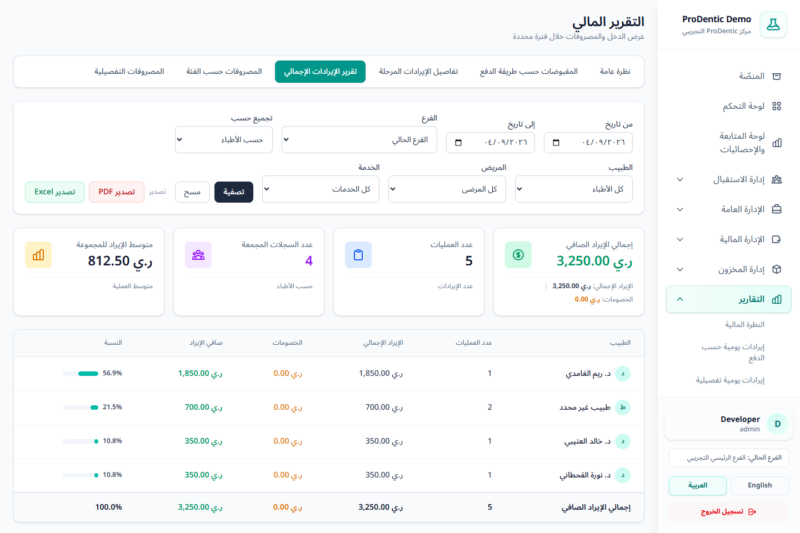
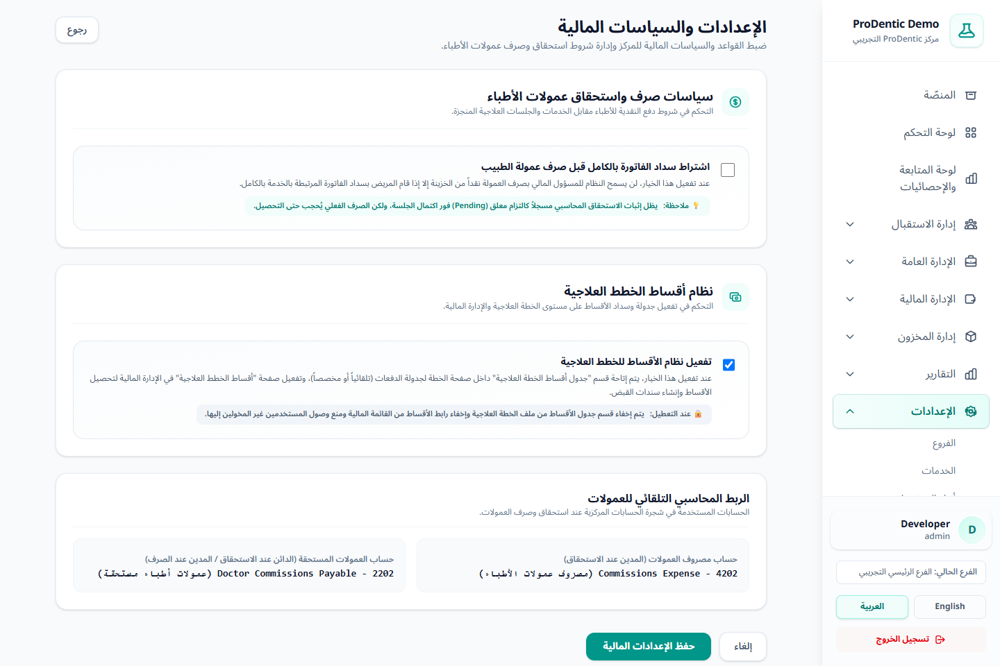

فاتورة عادية
الخدمة تعتبر منفذة بالكامل؛ يُعترف بالجزء الذي غطته دفعات المريض.
فهم دورة المبلغ من سند القبض إلى توزيع الدفعة، وتنفيذ الخدمة، والاعتراف بالإيراد، وترحيل الفاتورة وعمولة الطبيب.
| الحدث | ما الذي يفعله النظام؟ | هل يظهر إيرادًا؟ |
|---|---|---|
| استلام دفعة | ينشئ سند قبض: زيادة الخزينة وإضافة رصيد دائن للمريض. | لا، القبض وحده ليس إيرادًا منفذًا. |
| توزيع الدفعة | يوزع الرصيد على أقدم بنود المريض المستحقة داخل الفرع. | فقط للجزء المنفذ من البند. |
| اكتمال جلسة/تسليم معمل | يحسب مقدار البند المنفذ ويقارنه بالمبلغ الموزع عليه. | نعم، بقدر الأقل بين المنفذ والمدفوع. |
| ترحيل الفاتورة | يتأكد من السداد والتنفيذ الكاملين ثم يقفل الفاتورة ويثبت استحقاق العمولات. | لا يعيد تسجيل الإيراد مرة ثانية. |
يعامل النظام الدفعة كرصد للمريض داخل الفرع، ثم يوزعها آليًا على بنود الفواتير بترتيب الاستحقاق FIFO؛ أي أقدم بند قابل للفوترة أولًا.
الخدمة تعتبر منفذة بالكامل؛ يُعترف بالجزء الذي غطته دفعات المريض.
التنفيذ مرتبط بالجلسة أو بتوزيع نسبة البند على عدة جلسات مكتملة.
لا يعتبر منفذًا حتى تصبح حالة الطلب «تم الاستلام والتركيب».
يثبت النظام إجمالي الإيراد والخصم الممنوح وصافي الإيراد بنسب متوافقة مع الجزء المعترف به.
إذا عُكست دفعة أو تراجعت حالة تنفيذ مسموح بها، ينشئ النظام تسوية عكسية بدل حذف الأثر المحاسبي التاريخي.
زر الترحيل أصبح خطوة إقفال ورقابة نهائية، وليس لحظة إنشاء إيراد جديد. يسمح النظام بالترحيل عند تحقق جميع الشروط:
افتح التقارير واختر التقرير المناسب. تعتمد التقارير المالية الرسمية على القيود المحاسبية المرحلة، لا على مسودات المصدر.
| التقرير | الاستخدام |
|---|---|
| نظرة عامة | الإيراد الإجمالي، خصومات، خدمات، طلبات معمل، مصروفات وصافي. |
| المقبوضات حسب طريقة الدفع | تسوية النقدي والبطاقة والتحويل مع عدد العمليات. |
| تفاصيل الإيرادات | كل قيد إيراد مع المريض والطبيب والخدمة ونوع البند. |
| ملخص الإيرادات | تجميع الإيرادات حسب الطبيب أو المريض أو الخدمة مع النسبة. |
| المصروفات حسب الفئة | مقارنة إجماليات فئات المصروف. |
| المصروفات التفصيلية | مراجعة كل حركة مصروف في الفترة. |


من الإعدادات ← الإعدادات المالية يمكن للمدير التحكم في شرط صرف العمولة:
